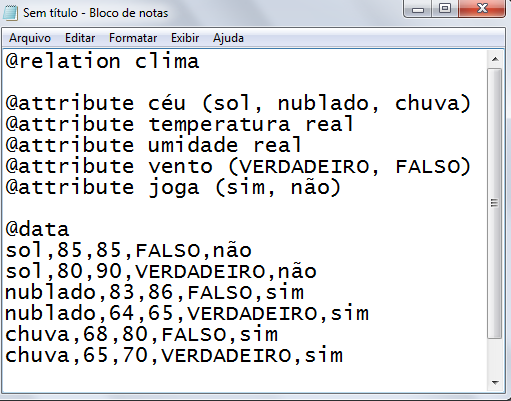

Manual Weka
Presented by Edgar D. Santos
Como Instalar:
Vamos iniciar o manual de Weka com a parte da instalação do Software.
Primeiro devemos entrar no site para baixar o executável do Weka,
nesse link: https://sourceforge.net/projects/weka/
Depois, como mostra a imagem abaixo(passe o mouse para abrir melhor), iremos clicar no
botão grande e verde escrito "Download".

O arquivo com nome de "weka-3-8-4-azul-zulu-windows.exe" irá começar um download,
depois que o download estiver finalizado, clique por fim no executável.
O programa irá abrir uma tela, apenas clique em "NEXT" e na próxima tela em "I AGREE".
Na próxima tela mostrada abaixo, ele irá pedir para escolher o tipo de instalação,
escolha a opção "FULL" para ele instalar o Weka completo e deixe a opção "Associate files" ativada,
então clique em "NEXT".
Na próxima tela, apenas escolha aonde o programa irá instalar seus arquivos e clique em "NEXT".
Na tela seguinte pode ignorar as informações e clicar em "INSTALL".
Como mostra na imagem abaixo, quando sua instalação estiver completa, ele vai mostrar um "COMPLETED",
e depois basta clicar em "NEXT" e na ultima tela clicar em "FINISH".
Pronto! Seu Weka está devidamente instalado!
Criando arquivo de extensão ".arff":
O WEKA utiliza como arquivo padrão para as tarefas de mineração o formato ARFF,
porém o minerador pode aceitar também arquivos CSV para realização das tarefas;
porém, é preciso inserir os atributos de cada instância.
O ARFF aceita basicamente dois tipos de datatypes que são String (Nominal) e Numeric.
Geralmente o minerador trabalha com Nominal Values em tarefas de associação e classificação;
e com atributos numéricos em tarefas de agrupamento; contudo isso não é obrigatório.
Para iniciarmos a criação do arquivo em "arff", primeiramente abra um bloco de notas em sua maquina.
adicionar o nome do conjunto de dados usando os descritores do arquivo e dos atributos conforme a regra:
@relation nome_do_conjuto_de_dados;
@attribute nome do atributo seguido do seu tipo;
@data e logo em seguida os dados em si.
Em seguida deve-se salvar o arquivo como texto puro com extensão ARFF.
Veja a imagem abaixo para ter um pequeno exemplo.

Salve com o nome desejado e coloque o ".arff" logo depois.
O arquivo com a extensão ".arff" irá receber o icone do Weka, como pode ver no exemplo abaixo.
Como utilizar o Weka:
Um pouco sobre o Weka:
Weka é um software livre para mineração de dados, do tipo open source,desenvolvido em Java dentro das especificações da GPL (General Public License)
que se consolidou como a ferramenta de mineração de dados mais utilizada por estudantes
e professores de universidades. A ferramenta também é muito utilizada por profissionais
que desejam aprender os conceitos básicos sobre mineração de dados.
Através de sua interface gráfica (conhecida como Weka Explorer)
possível conduzir processos de mineração de dados de forma simples,
realizando a avaliação dos resultados obtidos e a comparação de algoritmos.
Além disso, a ferramenta oferece recursos para a execução de tarefas relacionadas
ao pré-processamento de dados como, por exemplo, a seleção e a transformação de atributos.
Abrindo um arquivo no Weka:
Acompanhando a imagem abaixo, abra seu Weka e procure em sua maquina onde está salvoseu arquivo já configurado no formato ".arff" ou ".csv". Em seguida, já no Weka
aperte no botão "Explorer". O programa irá guiar você para uma nova tela.
Seguindo para a próxima tela, clique no botão "Open File". Em seguida
ele irá pedir para você buscar seu arquivo, como mostra na imagem, você poderá
alterar o tipo de arquivo que quer buscar ali embaixo, depois de escolher o tipo
e encontrar seu arquivo, basta clicar em "Abrir".
Depois de aberto, o arquivo no formato ".csv" irá mostrar essa tela
onde os dados podem ser analisados pelo usuário.
Árvores de Decisão e J48:
Árvores de decisão são modelos estatísticos que utilizam um treinamento supervisionadopara a classificação e previsão de dados. Em outras palavras, em sua construção
é utilizado um conjunto de treinamento formado por entradas e saídas.
Estas últimas são as classes. Veja um exemplo de Árvore de Decisão abaixo:
A árvore de decisão é um fluxograma que representa o processo ao se tomar uma ou várias decisões.
Trata-se de uma ferramenta de apoio que faz uso de um gráfico ou modelo em forma de
árvore a fim de representar escolhas e suas possíveis consequências.
Muitas empresas fazem uso dela para definir a política corporativa ou como ferramenta
para os funcionários. Todos também podem usá-la de modo individual ao tomar decisões
difíceis e dividi-las em uma série de escolhas mais simples ou com menor peso emocional.
Você pode aprender a fazer uma árvore de decisão direcionada às suas necessidades
identificando o problema e criando uma árvore básica ou uma árvore de preocupações.
Listando os dados em variáveis e montando as situações de acordo com o tipo de problema
que você precisa analisar.
Ao calcular a utilidade esperada ou o valor de cada escolha na árvore,
você pode minimizar o risco e maximizar a probabilidade de alcançar um resultado desejável.
Para calcular a utilidade esperada de uma escolha, basta subtrair o custo dessa decisão dos
benefícios esperados.
Uma Árvore de Decisão permite que um indivíduo ou organização compare possíveis ações com base
em seus custos, probabilidades e benefícios. Podem ser usadas tanto para conduzir diálogos informais
quanto para mapear um algoritmo que prevê a melhor escolha, matematicamente.
Utilizando o J48:
C0.25 (J48) é um algoritmo usado para gerar uma árvore de decisão desenvolvida por Ross Quinlan.C0.25 é uma extensão do algoritmo ID3 anterior de Quinlan.
As árvores de decisão geradas pelo C0.25 podem ser usadas para classificação e,
por esse motivo, o C0.25 é frequentemente chamado de classificador estatístico.
Tornou-se bastante popular após a classificação nº 1 nos 10 principais artigos de
destaque em Mineração de Dados publicados pela Springer LNCS em 2008.
Vamos aprender a utilizar essa ferramenta no Weka, primeiramente abra seu Weka na tela inicial.
Depois, faça o procedimento ensinado anteriormente sobre abrir um arquivo ".arff".
Quando chegar na tela principal referente ao arquivo, clique em "Classify" como
mostra na imagem abaixo:
Logo sem seguida, clique no botão "Choose", o programa irá abrir uma tela com várias
opções, procure pela pasta chamada "Trees", abra essa pasta e clique em "J48"
como mostra na imagem abaixo:
Agora para a parte final, marque a opção "Use training set" no canto superior da tela
e logo em seguida clique no botão "Start" no canto inferior.
Como mostra na imagem abaixo, a tela em branco irá mostrar os dados de seu arquivo ".arff"
e você já poderá visualizar seus dados. Para finalizar, iremos transformar os dados em
uma Árvore de Decisão.
Seguindo a referencia da imagem abaixo, clique com botão direito sob o nome mostrado
na parte inferior e clique por fim na opção "Visualize tree", note que depois
de escolher essa opção, o Weka irá criar uma Árvore de Decisão utilizando os dados que
você forneceu previamente no arquivo ".arff".
Suporte e Confiança:
Para finalizar nosso manual sobre Weka, vamos falar um pouco sobre o processodos calculos que levam o programa a ser uma ótima escolha para a analise
de dados quando nos referimos a Machine Learning.
Sobre Mineração de Dados
A Mineração de Dados (Data Mining) é uma linha de pesquisa pertencente ao campo daCiência da Computação que tem por objetivo oferecer estratégias automatizadas para a análise de
grandes bases de dados de empresas, procurando extrair das mesmas informações que
estejam implícitas, que sejam previamente desconhecidas e potencialmente úteis.
A Mineração de Dados surgiu no início dos anos 90, a partir da reunião de ideias
provenientes de diferentes áreas como Inteligência Artificial, Banco de Dados, Estatística, e
Visualização de Dados. A principal motivação para o surgimento da Mineração de Dados encontra-se
no fato de as organizações estarem armazenando de forma contínua uma enorme quantidade de dados
a respeito de seus negócios nas últimas décadas. O conhecimento obtido pelas técnicas de
Mineração de Dados é geralmente expresso na forma de regras e padrões.
Dada uma regra A Þ B, a sua medida de suporte (Sup) representa a porcentagem de transações da
base de dados que contêm os itens de A e B, indicando a relevância da mesma.
Já a sua medida de confiança (Conf) representa, dentre as transações que possuem
os itens de A, a porcentagem de transações que possuem também os itens de B,
indicando a validade da regra.
Observe que cada registro da base de dados armazena a relação de produtos adquiridos
por um cliente específico. Um exemplo de regra de associação que poderia ser
minerada nesta base de dados, através da utilização de uma ferramenta de data mining,
é dado por: {cerveja} Þ {salaminho}. Note que duas das seis transações que compõem
a base contêm os produtos {cerveja} e {salaminho}. Desta maneira,
o suporte da regra {cerveja} Þ {salaminho} pode ser calculado da
seguinte forma: 2 ¸ 6 = 33,33%. Observe agora que na base de dados,
existem duas transações que contêm os produtos {cerveja} e {salaminho} juntos e
três transações que contêm o produto {cerveja}. A confiança da regra
{cerveja} Þ {salaminho} pode então ser calculada da seguinte
maneira: 2 ¸ 3 = 66,67%. Este valor indica que 66,67% dos consumidores
que compraram {cerveja} também compraram {salaminho}.